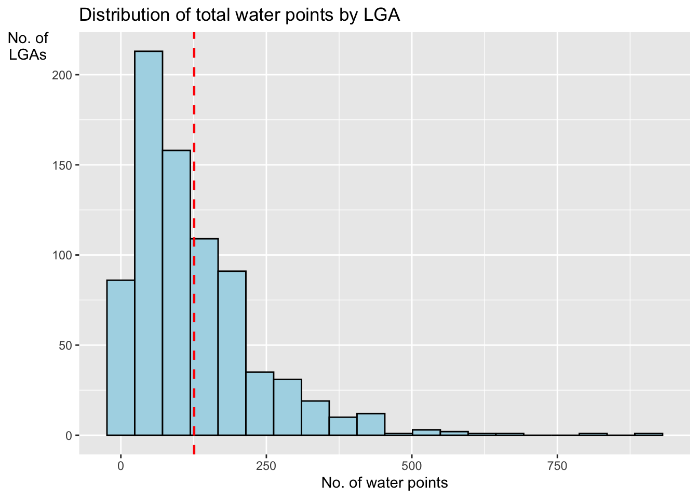

pacman::p_load(sf, tidyverse, funModeling)In-class Exercise 2: Geospatial Data Wrangling with R
Installing the R packages
First, we need to check if we have the three R packages to be used for the In-Class Excercise (sf ,tidyverse and funModelling) installed. If not, we need to install it automatically. The below code checks if the packages are already installed, else it will install the packages for us. However, before running the below code, ensure that 'packman' package has been installed in your RStudio.
Importing the Geospatial Dataset
The geoBoundaries Dataset
To Import the Geospatial data, run the following code. Ensure that the directory of the files and the file name is correct. By running the code, the data will be in meters and it will be in simple feature format.
geoNGA <- st_read("data/geospatial",
layer = "geoBoundaries-NGA-ADM2") %>%
st_transform(crs = 26392)Reading layer `geoBoundaries-NGA-ADM2' from data source
`/Users/shambhavigoenka/Desktop/School/Geo/IS415-GAA/in-class_ex/in-class_ex02/data/geospatial'
using driver `ESRI Shapefile'
Simple feature collection with 774 features and 5 fields
Geometry type: MULTIPOLYGON
Dimension: XY
Bounding box: xmin: 2.668534 ymin: 4.273007 xmax: 14.67882 ymax: 13.89442
Geodetic CRS: WGS 84Importing the NGA Dataset
To Import the NGAdata, run the following code. Ensure that the directory of the files and the file name is correct.
NGA <- st_read("data/geospatial",
layer = "nga_admbnda_adm2_osgof_20190417") %>%
st_transform(crs = 26392)Reading layer `nga_admbnda_adm2_osgof_20190417' from data source
`/Users/shambhavigoenka/Desktop/School/Geo/IS415-GAA/in-class_ex/in-class_ex02/data/geospatial'
using driver `ESRI Shapefile'
Simple feature collection with 774 features and 16 fields
Geometry type: MULTIPOLYGON
Dimension: XY
Bounding box: xmin: 2.668534 ymin: 4.273007 xmax: 14.67882 ymax: 13.89442
Geodetic CRS: WGS 84Importing Aspatial data
Similar to the Geospatial data, import the Aspatial data, however, remember that the data is in CSV format and hence, read_csv() must be used
wp_nga <- read_csv("data/aspatial/WPdx.csv") %>%
filter(`#clean_country_name` == "Nigeria")Converting Aspatial Data into Geospatial
We now convert the newly extracted Aspatial data (wp_nga) into point sf dataframe using the below code.
wp_nga$Geometry = st_as_sfc(wp_nga$`New Georeferenced Column`)
wp_nga# A tibble: 97,478 × 75
row_id `#source` #lat_…¹ #lon_…² #repo…³ #stat…⁴ #wate…⁵ #wate…⁶ #wate…⁷
<dbl> <chr> <dbl> <dbl> <chr> <chr> <chr> <chr> <chr>
1 158721 Federal Minis… 5.07 6.62 02/19/… Yes Boreho… Well Mechan…
2 158892 Federal Minis… 5.09 7.09 02/06/… Yes Boreho… Well Hand P…
3 323117 Federal Minis… 5.91 8.77 08/31/… Yes Boreho… Well Hand P…
4 300176 Federal Minis… 5.23 7.32 05/17/… Yes Boreho… Well Mechan…
5 324346 Federal Minis… 6.88 3.36 08/17/… Yes Boreho… Well Mechan…
6 297273 Federal Minis… 6.59 3.29 05/26/… Yes Boreho… Well Mechan…
7 296853 Federal Minis… 6.60 3.26 06/02/… Yes Boreho… Well Mechan…
8 323866 Federal Minis… 6.20 6.73 09/18/… Yes Boreho… Well Mechan…
9 297044 Federal Minis… 6.61 3.30 05/26/… Yes Boreho… Well Mechan…
10 324321 Federal Minis… 6.96 3.60 08/16/… Yes Boreho… Well Mechan…
# … with 97,468 more rows, 66 more variables: `#water_tech_category` <chr>,
# `#facility_type` <chr>, `#clean_country_name` <chr>, `#clean_adm1` <chr>,
# `#clean_adm2` <chr>, `#clean_adm3` <chr>, `#clean_adm4` <chr>,
# `#install_year` <dbl>, `#installer` <chr>, `#rehab_year` <lgl>,
# `#rehabilitator` <lgl>, `#management_clean` <chr>, `#status_clean` <chr>,
# `#pay` <chr>, `#fecal_coliform_presence` <chr>,
# `#fecal_coliform_value` <dbl>, `#subjective_quality` <chr>, …wp_sf <- st_sf(wp_nga, crs=4326)
wp_sfSimple feature collection with 97478 features and 74 fields
Geometry type: POINT
Dimension: XY
Bounding box: xmin: 2.707441 ymin: 4.301812 xmax: 14.21828 ymax: 13.86568
Geodetic CRS: WGS 84
# A tibble: 97,478 × 75
row_id `#source` #lat_…¹ #lon_…² #repo…³ #stat…⁴ #wate…⁵ #wate…⁶ #wate…⁷
* <dbl> <chr> <dbl> <dbl> <chr> <chr> <chr> <chr> <chr>
1 158721 Federal Minis… 5.07 6.62 02/19/… Yes Boreho… Well Mechan…
2 158892 Federal Minis… 5.09 7.09 02/06/… Yes Boreho… Well Hand P…
3 323117 Federal Minis… 5.91 8.77 08/31/… Yes Boreho… Well Hand P…
4 300176 Federal Minis… 5.23 7.32 05/17/… Yes Boreho… Well Mechan…
5 324346 Federal Minis… 6.88 3.36 08/17/… Yes Boreho… Well Mechan…
6 297273 Federal Minis… 6.59 3.29 05/26/… Yes Boreho… Well Mechan…
7 296853 Federal Minis… 6.60 3.26 06/02/… Yes Boreho… Well Mechan…
8 323866 Federal Minis… 6.20 6.73 09/18/… Yes Boreho… Well Mechan…
9 297044 Federal Minis… 6.61 3.30 05/26/… Yes Boreho… Well Mechan…
10 324321 Federal Minis… 6.96 3.60 08/16/… Yes Boreho… Well Mechan…
# … with 97,468 more rows, 66 more variables: `#water_tech_category` <chr>,
# `#facility_type` <chr>, `#clean_country_name` <chr>, `#clean_adm1` <chr>,
# `#clean_adm2` <chr>, `#clean_adm3` <chr>, `#clean_adm4` <chr>,
# `#install_year` <dbl>, `#installer` <chr>, `#rehab_year` <lgl>,
# `#rehabilitator` <lgl>, `#management_clean` <chr>, `#status_clean` <chr>,
# `#pay` <chr>, `#fecal_coliform_presence` <chr>,
# `#fecal_coliform_value` <dbl>, `#subjective_quality` <chr>, …Project Transformation
We now transform the projection from wgs84 to appropriate projected coordinate system of Nigeria.
wp_sf <- wp_sf %>%
st_transform(crs = 26392)Geospatial Data Cleaning
Excluding redundent fields
NGA <- NGA %>%
select(c(3:4,8:9))Checking for duplicate name
It is important to check for duplicate name in the data main data fields. Using duplicate(), we can flag out the LGA names.
NGA$ADM2_EN[duplicated(NGA$ADM2_EN)==TRUE][1] "Bassa" "Ifelodun" "Irepodun" "Nasarawa" "Obi" "Surulere"The printout above shows that there are 6 LGAs with the same name,. A Google search using the coordinates showed that there are LGAs with the same name but are located in different states.
NGA$ADM2_EN[94] <- "Bassa, Kogi"
NGA$ADM2_EN[95] <- "Bassa, Plateau"
NGA$ADM2_EN[304] <- "Ifelodun, Kwara"
NGA$ADM2_EN[305] <- "Ifelodun, Osun"
NGA$ADM2_EN[355] <- "Irepodun, Kwara"
NGA$ADM2_EN[356] <- "Irepodun, Osun"
NGA$ADM2_EN[519] <- "Nasarawa, Kano"
NGA$ADM2_EN[520] <- "Nasarawa, Nasarawa"
NGA$ADM2_EN[546] <- "Obi, Benue"
NGA$ADM2_EN[547] <- "Obi, Nasarawa"
NGA$ADM2_EN[693] <- "Surulere, Lagos"
NGA$ADM2_EN[694] <- "Surulere, Oyo"Check if there are any duplicated codes now
NGA$ADM2_EN[duplicated(NGA$ADM2_EN)==TRUE]character(0)Data Wrangling for Water Point Data
freq(data = wp_sf,
input = '#status_clean')
#status_clean frequency percentage cumulative_perc
1 Functional 47228 48.45 48.45
2 Non-Functional 30638 31.43 79.88
3 <NA> 10154 10.42 90.30
4 Functional, needs repair 4792 4.92 95.22
5 Non-Functional, dry 2473 2.54 97.76
6 Functional, not in use 1775 1.82 99.58
7 Abandoned/Decommissioned 321 0.33 99.91
8 Functional but not in use 86 0.09 100.00
9 Non-Functional due to dry season 7 0.01 100.01
10 Functional but needs repair 4 0.00 100.00wp_sf_nga <- wp_sf %>%
rename(status_clean = '#status_clean') %>%
select(status_clean) %>%
mutate(status_clean = replace_na(
status_clean, "unknown"))Extracting Water Point Data
wp_functional <- wp_sf_nga %>%
filter(status_clean %in%
c("Functional",
"Functional but not in use",
"Functional but needs repair"))wp_nonfunctional <- wp_sf_nga %>%
filter(status_clean %in%
c("Abandoned/Decommissioned",
"Abandoned",
"Non-Functional due to dry season",
"Non-Functional",
"Non functional due to dry season"))wp_unknown <- wp_sf_nga %>%
filter(status_clean == "unknown")Next, the code chunk below is used to perform a quick EDA on the derived sf data.frames.
freq(data = wp_functional,
input = 'status_clean')
status_clean frequency percentage cumulative_perc
1 Functional 47228 99.81 99.81
2 Functional but not in use 86 0.18 99.99
3 Functional but needs repair 4 0.01 100.00freq(data = wp_nonfunctional,
input = 'status_clean')
status_clean frequency percentage cumulative_perc
1 Non-Functional 30638 98.94 98.94
2 Abandoned/Decommissioned 321 1.04 99.98
3 Non-Functional due to dry season 7 0.02 100.00freq(data = wp_unknown,
input = 'status_clean')
status_clean frequency percentage cumulative_perc
1 unknown 10154 100 100Performing Point-in Polygon Count
NGA_wp <- NGA %>%
mutate(`total_wp` = lengths(
st_intersects(NGA, wp_sf_nga))) %>%
mutate(`wp_functional` = lengths(
st_intersects(NGA, wp_functional))) %>%
mutate(`wp_nonfunctional` = lengths(
st_intersects(NGA, wp_nonfunctional))) %>%
mutate(`wp_unknown` = lengths(
st_intersects(NGA, wp_unknown)))Visualising attributes by using statistical graphs
ggplot(data= NGA_wp,
aes(x = total_wp)) +
geom_histogram(bins = 20,
color="black",
fill="light blue") +
geom_vline(aes(xintercept=mean(
total_wp, na.rm=T)),
color="red",
linetype="dashed",
size=0.8) +
ggtitle("Distribution of total water points by LGA") +
xlab("No. of water points") +
ylab("No. of\nLGAs") +
theme(axis.title.y = element_text(angle = 0))
Saving the Analytical data in rds format
write_rds(NGA_wp, "data/rds/NGA_wp.rds")